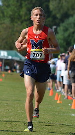
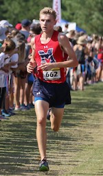
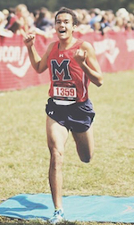
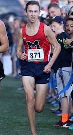
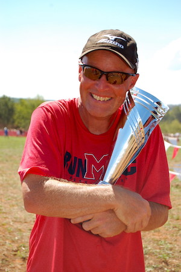

In the fall of 2017, the Milton Cross Country team went undefeated in season competition. Led by a group of five capable and talented runners, Milton was able to handily take down any and all competition in the state of Georgia. During the season, they also grabbed national headline attention, recieving praise from writers on both Milesplit and FloTrack. The runners left a legacy on Milton that will not be forgotten for years to come.
| Sam Bowers |
(14:50) Sam is the fastest runner ever from the Milton XC Program. He has easily established himself as one the best runners in Georgia every since winning the GHSA State title back in 2016 |
|  Nicholas Yanek |
(15:00)Nick only arrived as a junior in the spring of 2017, but easily established himself as a top contender for the team and for the state of Georgia. With exceptional pace, Yanek and Bowers allowed MXC to go 1-2 in most races. |
|  Michael Malkowski |
(15:23)Michael is a well rounded athlete. While he has the ability to maintain 5k speed, he also has strong 800 speed, as he made it to the GHSA State finals last season. He also dabbles in Madden and 2k during the off-season. |
|  Samuel DruMilton |
(15:45)Dru, which is short for Quadruple, had a big season this fall. After a strong summer, Dru continued to move up the ranks of the team and drop his time race after race. After an excellent finish at State, he was recruited to run at UGA. |
|  Ryan Beitzell |
(15:56) Ryan finishes up the top 5 of this incredible team. With similiar strengths of versatility like Michael, Ryan found himself being able to show off strong times on both the track and the xc course. |

Andy Carr is the head coach for the Milton Cross Country team. He is a community coach from Atlanta Track Club with a great deal of experience in running. During his youth, ACarr
competed in high school, as well as running for Roanoke in college. ACarr is known for his unique training regimen, which involves low in-season mileage, alongside a strenuous pyramid build up for his athletes (Basework, followed by strength training, followed by speed work). After over 15 years of coaching at Milton, ACarr has seen over 20 runners continue at the the collegiate level. With his great deal of history and recurring success, Coach Carr was able to achieve his first ever state team win with the 2017 Boys.
For more information regarding the Milton Cross Country Team, please visit their HOME PAGE to learn more.